theme_readme <- function() {
theme_minimal(base_size = 14) +
theme(
plot.title = element_text(face = "bold", size = 16),
plot.subtitle = element_text(color = "gray40"),
panel.grid.minor = element_blank(),
legend.position = "bottom"
)
}
colors <- c("total" = "#2C3E50", "highlight" = "#E67E22", "secondary" = "#95A5A6",
"decline" = "#E74C3C", "growth" = "#27AE60", "blue" = "#3498DB")
enr <- fetch_enr_multi(2016:2024, use_cache = TRUE)
enr_current <- fetch_enr(2024, use_cache = TRUE)
# Helper function to get unique district totals
get_district_totals <- function(df) {
df %>%
filter(is_district, grade_level == "TOTAL", subgroup == "total_enrollment") %>%
select(end_year, district_name, n_students) %>%
distinct()
}
# Helper function to get unique state totals
get_state_totals <- function(df) {
df %>%
filter(is_state, grade_level == "TOTAL", subgroup == "total_enrollment") %>%
select(end_year, n_students) %>%
distinct()
}1. Montgomery County is Maryland’s largest district with 155,000 students
Montgomery County Public Schools enrolls more students than entire states like Wyoming or Vermont. It is one of the top 20 largest school districts in the nation.
top_districts <- get_district_totals(enr_current) %>%
arrange(desc(n_students)) %>%
head(5) %>%
mutate(district_label = reorder(district_name, n_students))
stopifnot(nrow(top_districts) > 0)
top_districts %>%
select(district_name, n_students)
#> district_name n_students
#> 1...1 Montgomery 154791
#> 1...2 Prince George's 127330
#> 1...3 Baltimore County 105944
#> 1...4 Anne Arundel 82353
#> 1...5 Baltimore City 72995
ggplot(top_districts, aes(x = district_label, y = n_students)) +
geom_col(fill = colors["total"]) +
coord_flip() +
scale_y_continuous(labels = comma) +
labs(title = "Maryland's Largest School Systems, 2024",
subtitle = "Montgomery County leads with 155,000 students",
x = "", y = "Students") +
theme_readme()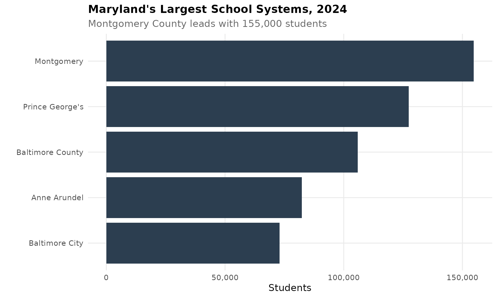
2. Maryland enrollment has been remarkably stable since 2016
Maryland has maintained roughly 855,000-877,000 students over the past 9 years. A brief dip during COVID in 2020-2021 recovered by 2022, and enrollment has held steady near 859,000.
state_trend <- get_state_totals(enr) %>%
arrange(end_year)
stopifnot(nrow(state_trend) > 0)
state_trend %>%
select(end_year, n_students)
#> end_year n_students
#> 1...1 2016 854913
#> 1...2 2017 862867
#> 1...3 2018 865491
#> 1...4 2019 876810
#> 1...5 2020 858519
#> 1...6 2021 853307
#> 1...7 2022 858850
#> 1...8 2023 858362
#> 1...9 2024 859083
ggplot(state_trend, aes(x = end_year, y = n_students)) +
geom_line(linewidth = 1.5, color = colors["total"]) +
geom_point(size = 3, color = colors["total"]) +
geom_vline(xintercept = 2020, linetype = "dashed", color = "red", alpha = 0.5) +
annotate("text", x = 2020, y = max(state_trend$n_students) + 2000,
label = "COVID", color = "red", size = 3) +
scale_y_continuous(labels = comma) +
labs(title = "Maryland Statewide Enrollment, 2016-2024",
subtitle = "Remarkably stable at ~859,000 students",
x = "School Year", y = "Students") +
theme_readme()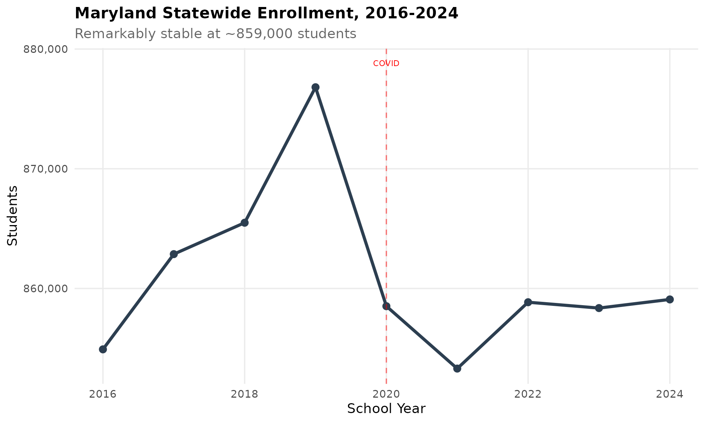
3. Baltimore City lost nearly 5,000 students since 2016
Baltimore City enrollment has declined 6.3% from 77,866 in 2016 to 72,995 in 2024. The decline has been steady, with a slight uptick in 2024. Population loss and suburban migration are driving forces.
baltimore <- get_district_totals(enr) %>%
filter(district_name == "Baltimore City") %>%
arrange(end_year)
stopifnot(nrow(baltimore) > 0)
baltimore %>%
filter(end_year %in% c(min(end_year), max(end_year))) %>%
mutate(change = n_students - lag(n_students),
pct_change = round((n_students / lag(n_students) - 1) * 100, 1))
#> end_year district_name n_students change pct_change
#> 1...1 2016 Baltimore City 77866 NA NA
#> 1...2 2024 Baltimore City 72995 -4871 -6.3
ggplot(baltimore, aes(x = end_year, y = n_students)) +
geom_line(linewidth = 1.5, color = colors["decline"]) +
geom_point(size = 3, color = colors["decline"]) +
scale_y_continuous(labels = comma, limits = c(0, NA)) +
labs(title = "Baltimore City Enrollment Decline",
subtitle = "Lost nearly 5,000 students (-6.3%) from 2016 to 2024",
x = "School Year", y = "Students") +
theme_readme()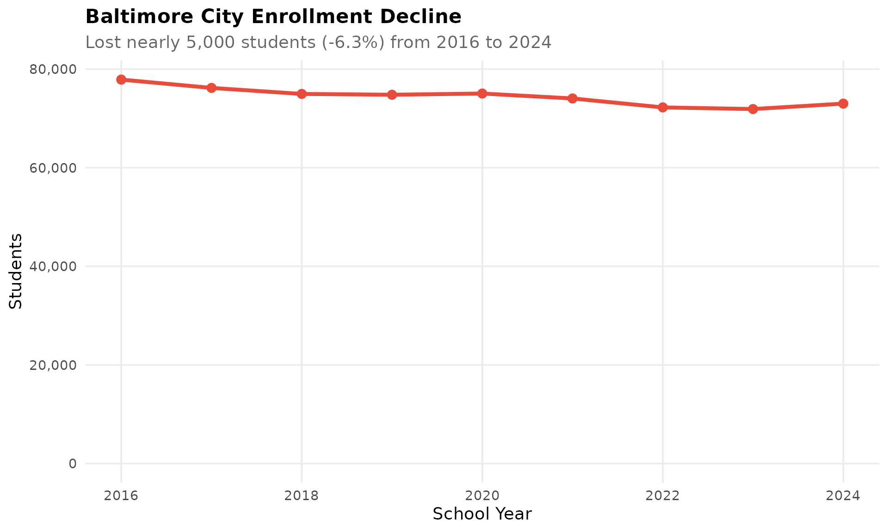
4. Kindergarten dropped 10% in 2020 and never fully recovered
COVID hit kindergarten hardest. Maryland lost 10.3% of kindergartners in the 2019-20 school year as families delayed enrollment. By 2024, kindergarten enrollment is still 8.5% below its 2019 peak, suggesting some students shifted permanently out of public schools.
k_trend <- enr %>%
filter(is_state, subgroup == "total_enrollment",
grade_level %in% c("K", "01", "06", "12")) %>%
select(end_year, grade_level, n_students) %>%
distinct() %>%
mutate(grade_label = case_when(
grade_level == "K" ~ "Kindergarten",
grade_level == "01" ~ "Grade 1",
grade_level == "06" ~ "Grade 6",
grade_level == "12" ~ "Grade 12"
))
stopifnot(nrow(k_trend) > 0)
k_trend %>%
filter(grade_level == "K") %>%
select(end_year, n_students) %>%
mutate(change = n_students - lag(n_students),
pct_change = round((n_students / lag(n_students) - 1) * 100, 1))
#> end_year n_students change pct_change
#> 1...1 2016 64472 NA NA
#> 1...2 2017 64045 -427 -0.7
#> 1...3 2018 63779 -266 -0.4
#> 1...4 2019 65087 1308 2.1
#> 1...5 2020 58391 -6696 -10.3
#> 1...6 2021 61671 3280 5.6
#> 1...7 2022 60986 -685 -1.1
#> 1...8 2023 60514 -472 -0.8
#> 1...9 2024 59562 -952 -1.6
ggplot(k_trend, aes(x = end_year, y = n_students, color = grade_label)) +
geom_line(linewidth = 1.2) +
geom_point(size = 2.5) +
geom_vline(xintercept = 2020, linetype = "dashed", color = "red", alpha = 0.5) +
annotate("text", x = 2020, y = max(k_trend$n_students, na.rm = TRUE) + 1000,
label = "COVID", color = "red", size = 3) +
scale_y_continuous(labels = comma) +
labs(title = "COVID Impact on Grade-Level Enrollment",
subtitle = "Kindergarten dropped 10.3% in 2020 and has not recovered",
x = "School Year", y = "Students", color = "") +
theme_readme()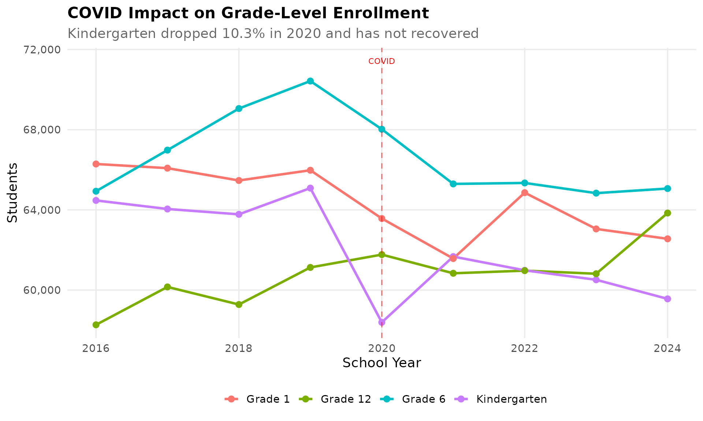
5. The Eastern Shore has barely changed in a decade
Five Eastern Shore counties (Worcester, Somerset, Dorchester, Wicomico, and Caroline) collectively serve about 33,000 students. Unlike the dramatic declines seen elsewhere, the Eastern Shore has been remarkably stable since 2016.
eastern_shore <- c("Worcester", "Somerset", "Dorchester", "Wicomico", "Caroline")
eastern <- get_district_totals(enr) %>%
filter(district_name %in% eastern_shore) %>%
group_by(end_year) %>%
summarize(n_students = sum(n_students, na.rm = TRUE), .groups = "drop") %>%
arrange(end_year)
stopifnot(nrow(eastern) > 0)
eastern %>%
filter(end_year %in% c(min(end_year), max(end_year))) %>%
mutate(change = n_students - lag(n_students),
pct_change = round((n_students / lag(n_students) - 1) * 100, 1))
#> # A tibble: 2 × 4
#> end_year n_students change pct_change
#> <int> <dbl> <dbl> <dbl>
#> 1 2016 33326 NA NA
#> 2 2024 33491 165 0.5
ggplot(eastern, aes(x = end_year, y = n_students)) +
geom_line(linewidth = 1.5, color = colors["total"]) +
geom_point(size = 3, color = colors["total"]) +
scale_y_continuous(labels = comma) +
labs(title = "Eastern Shore Combined Enrollment",
subtitle = "Five rural counties hold steady at ~33,000 students",
x = "School Year", y = "Students") +
theme_readme()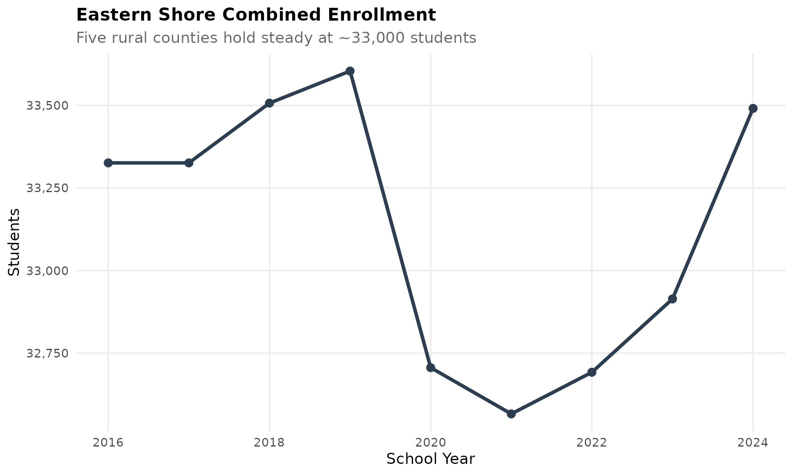
6. Western Maryland is shrinking: Garrett lost 12% since 2016
Allegany and Garrett counties in Appalachian Maryland have lost 7% and 12% of students respectively since 2016. These rural mountain communities face similar population challenges to Appalachian communities nationwide.
western <- c("Allegany", "Garrett")
western_trend <- get_district_totals(enr) %>%
filter(district_name %in% western) %>%
arrange(district_name, end_year)
stopifnot(nrow(western_trend) > 0)
western_trend %>%
group_by(district_name) %>%
filter(end_year %in% c(min(end_year), max(end_year))) %>%
mutate(change = n_students - lag(n_students),
pct_change = round((n_students / lag(n_students) - 1) * 100, 1)) %>%
filter(!is.na(change)) %>%
select(district_name, end_year, n_students, change, pct_change)
#> # A tibble: 2 × 5
#> # Groups: district_name [2]
#> district_name end_year n_students change pct_change
#> <chr> <int> <dbl> <dbl> <dbl>
#> 1 Allegany 2024 7640 -572 -7
#> 2 Garrett 2024 3193 -445 -12.2
ggplot(western_trend, aes(x = end_year, y = n_students, color = district_name)) +
geom_line(linewidth = 1.2) +
geom_point(size = 2.5) +
scale_y_continuous(labels = comma) +
labs(title = "Western Maryland Enrollment Decline",
subtitle = "Garrett lost 12.2%, Allegany lost 7.0% since 2016",
x = "School Year", y = "Students", color = "") +
theme_readme()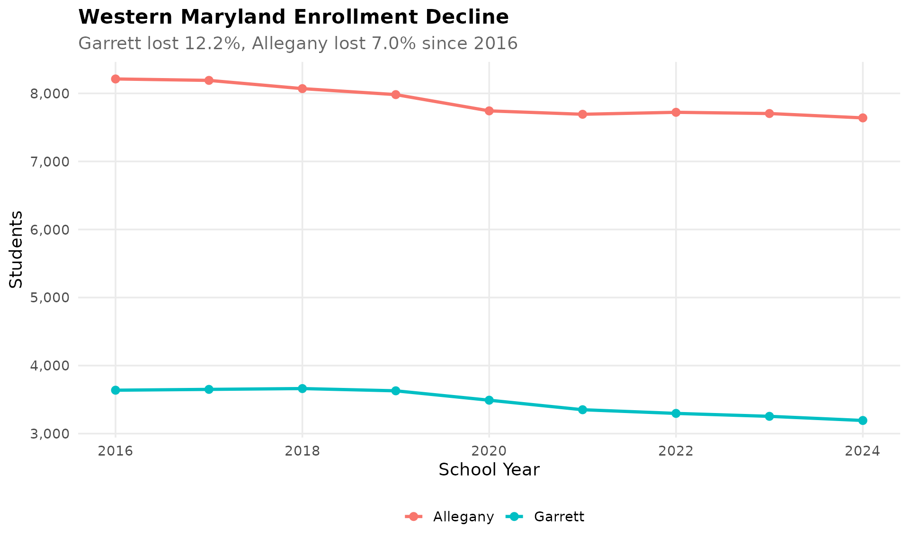
7. Anne Arundel grew 4% while nearby Baltimore County shrank
Anne Arundel County has quietly added 3,200 students since 2016, growing 4.1%. Meanwhile, neighboring Baltimore County lost over 2,300 students. The Annapolis-area county benefits from military families at Fort Meade and its proximity to both DC and Baltimore.
aa <- get_district_totals(enr) %>%
filter(district_name == "Anne Arundel") %>%
arrange(end_year)
stopifnot(nrow(aa) > 0)
aa %>%
filter(end_year %in% c(min(end_year), max(end_year))) %>%
mutate(change = n_students - lag(n_students),
pct_change = round((n_students / lag(n_students) - 1) * 100, 1))
#> end_year district_name n_students change pct_change
#> 1...1 2016 Anne Arundel 79126 NA NA
#> 1...2 2024 Anne Arundel 82353 3227 4.1
ggplot(aa, aes(x = end_year, y = n_students)) +
geom_line(linewidth = 1.5, color = colors["growth"]) +
geom_point(size = 3, color = colors["growth"]) +
scale_y_continuous(labels = comma, limits = c(0, NA)) +
labs(title = "Anne Arundel County Enrollment Growth",
subtitle = "Added 3,200 students (+4.1%) since 2016",
x = "School Year", y = "Students") +
theme_readme()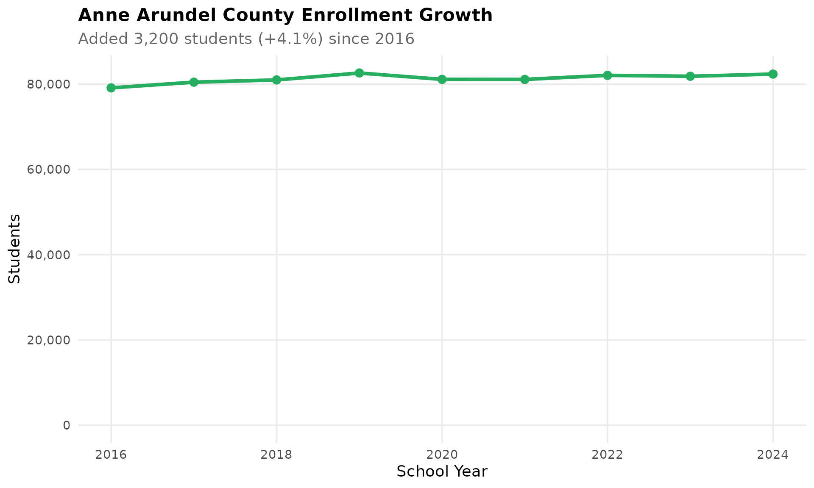
8. The I-95 corridor enrolls 61% of all Maryland students
Five counties along I-95 (Baltimore County, Montgomery, Prince George’s, Howard, and Anne Arundel) enroll 526,000 of Maryland’s 859,000 students. This 61% concentration reflects the state’s suburban population center between DC and Baltimore.
i95 <- c("Baltimore County", "Montgomery", "Prince George's", "Howard", "Anne Arundel")
corridor <- get_district_totals(enr_current) %>%
mutate(corridor = ifelse(district_name %in% i95, "I-95 Corridor", "Rest of Maryland")) %>%
group_by(corridor) %>%
summarize(n_students = sum(n_students, na.rm = TRUE), .groups = "drop")
stopifnot(nrow(corridor) == 2)
corridor %>%
mutate(pct = round(n_students / sum(n_students) * 100, 1))
#> # A tibble: 2 × 3
#> corridor n_students pct
#> <chr> <dbl> <dbl>
#> 1 I-95 Corridor 526451 61.3
#> 2 Rest of Maryland 332632 38.7
ggplot(corridor, aes(x = corridor, y = n_students, fill = corridor)) +
geom_col() +
scale_y_continuous(labels = comma) +
scale_fill_manual(values = c("I-95 Corridor" = "#2C3E50", "Rest of Maryland" = "#95A5A6")) +
labs(title = "The I-95 Corridor Dominates Maryland Education",
subtitle = "Five counties along I-95 enroll 61% of all students",
x = "", y = "Students") +
theme_readme() +
theme(legend.position = "none")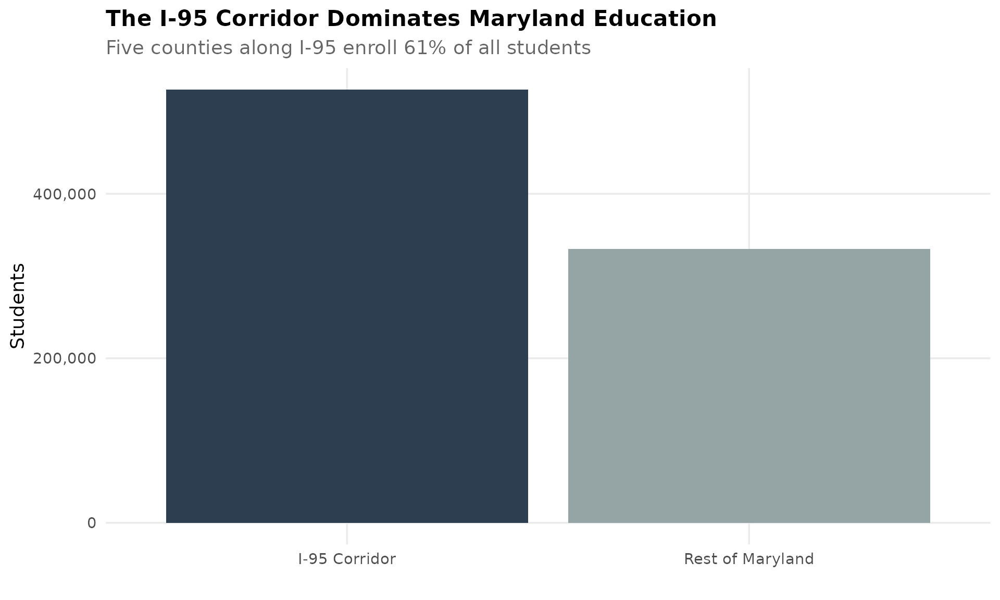
9. Frederick County grew 16% – fastest in the state
Frederick County has added over 6,300 students since 2016, a 15.8% increase. Located between the DC suburbs and western Maryland, Frederick attracts families seeking more affordable housing while maintaining access to the DC job market.
frederick <- get_district_totals(enr) %>%
filter(district_name == "Frederick") %>%
arrange(end_year)
stopifnot(nrow(frederick) > 0)
frederick %>%
filter(end_year %in% c(min(end_year), max(end_year))) %>%
mutate(change = n_students - lag(n_students),
pct_change = round((n_students / lag(n_students) - 1) * 100, 1))
#> end_year district_name n_students change pct_change
#> 1...1 2016 Frederick 40111 NA NA
#> 1...2 2024 Frederick 46468 6357 15.8
ggplot(frederick, aes(x = end_year, y = n_students)) +
geom_line(linewidth = 1.5, color = colors["growth"]) +
geom_point(size = 3, color = colors["growth"]) +
scale_y_continuous(labels = comma, limits = c(0, NA)) +
labs(title = "Frederick County Enrollment Growth",
subtitle = "DC exurbs driving 15.8% growth since 2016",
x = "School Year", y = "Students") +
theme_readme()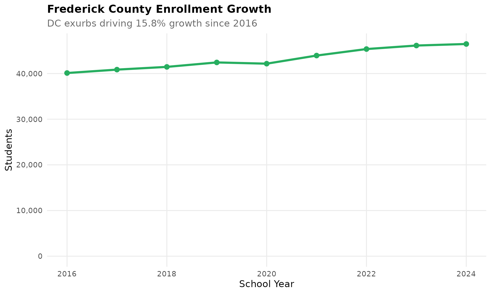
10. Baltimore County vs Baltimore City: Divergent paths
While Baltimore City lost nearly 5,000 students (-6.3%), Baltimore County also shrank but from a higher base. The county surrounds but is entirely separate from the city. Both are losing students, though at different rates.
baltimore_both <- get_district_totals(enr) %>%
filter(district_name %in% c("Baltimore City", "Baltimore County")) %>%
arrange(district_name, end_year)
stopifnot(nrow(baltimore_both) > 0)
baltimore_both %>%
group_by(district_name) %>%
filter(end_year %in% c(min(end_year), max(end_year))) %>%
mutate(change = n_students - lag(n_students),
pct_change = round((n_students / lag(n_students) - 1) * 100, 1)) %>%
filter(!is.na(change)) %>%
select(district_name, end_year, n_students, change, pct_change)
#> # A tibble: 2 × 5
#> # Groups: district_name [2]
#> district_name end_year n_students change pct_change
#> <chr> <int> <dbl> <dbl> <dbl>
#> 1 Baltimore City 2024 72995 -4871 -6.3
#> 2 Baltimore County 2024 105944 -2372 -2.2
ggplot(baltimore_both, aes(x = end_year, y = n_students, color = district_name)) +
geom_line(linewidth = 1.2) +
geom_point(size = 2.5) +
scale_y_continuous(labels = comma) +
scale_color_manual(values = c("Baltimore City" = "#E74C3C", "Baltimore County" = "#3498DB")) +
labs(title = "Baltimore City vs Baltimore County",
subtitle = "Both declining, from different starting points",
x = "School Year", y = "Students", color = "") +
theme_readme()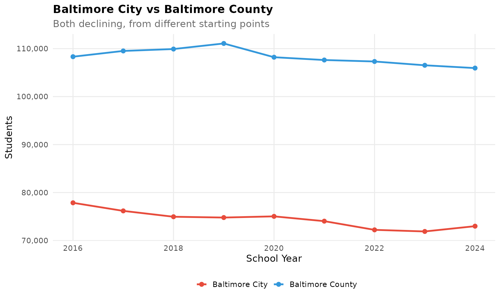
11. Howard County plateaued after years of growth
Howard County grew from 54,348 in 2016 to 57,508 in 2019, then flattened. The county is now one of the few large districts in Maryland where enrollment has stopped growing, possibly reflecting the limits of available housing.
howard <- get_district_totals(enr) %>%
filter(district_name == "Howard") %>%
arrange(end_year)
stopifnot(nrow(howard) > 0)
howard %>%
filter(end_year %in% c(min(end_year), max(end_year))) %>%
mutate(change = n_students - lag(n_students),
pct_change = round((n_students / lag(n_students) - 1) * 100, 1))
#> end_year district_name n_students change pct_change
#> 1...1 2016 Howard 54348 NA NA
#> 1...2 2024 Howard 56033 1685 3.1
ggplot(howard, aes(x = end_year, y = n_students)) +
geom_line(linewidth = 1.5, color = colors["blue"]) +
geom_point(size = 3, color = colors["blue"]) +
scale_y_continuous(labels = comma, limits = c(0, NA)) +
labs(title = "Howard County Enrollment Plateau",
subtitle = "Growth stalled after 2019 at ~56,000 students",
x = "School Year", y = "Students") +
theme_readme()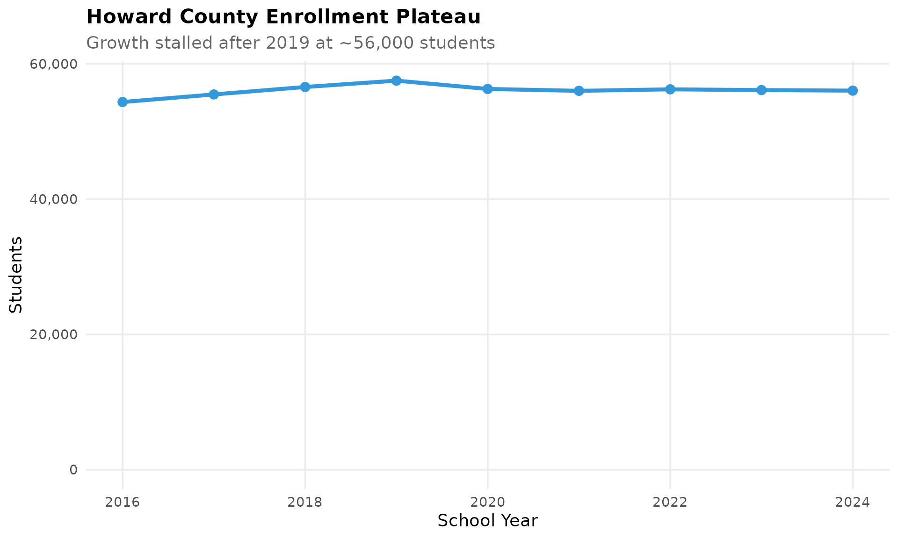
12. Charles County: Southern Maryland’s steady growth
Charles County is the largest district in Southern Maryland and has added 1,483 students (+5.8%) since 2016. The county serves as a bedroom community for DC-area workers seeking affordable housing south of the capital.
charles <- get_district_totals(enr) %>%
filter(district_name == "Charles") %>%
arrange(end_year)
stopifnot(nrow(charles) > 0)
charles %>%
filter(end_year %in% c(min(end_year), max(end_year))) %>%
mutate(change = n_students - lag(n_students),
pct_change = round((n_students / lag(n_students) - 1) * 100, 1))
#> end_year district_name n_students change pct_change
#> 1...1 2016 Charles 25522 NA NA
#> 1...2 2024 Charles 27005 1483 5.8
ggplot(charles, aes(x = end_year, y = n_students)) +
geom_line(linewidth = 1.5, color = colors["total"]) +
geom_point(size = 3, color = colors["total"]) +
scale_y_continuous(labels = comma, limits = c(0, NA)) +
labs(title = "Charles County Enrollment",
subtitle = "Southern Maryland's largest system: steady +5.8% growth",
x = "School Year", y = "Students") +
theme_readme()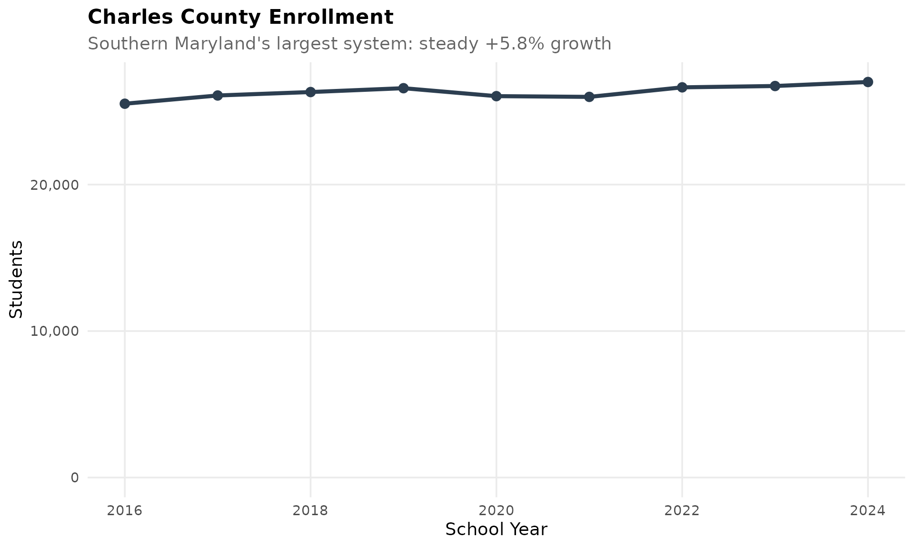
13. Grade 9 is 30% larger than grade 12
Maryland has 77,465 ninth-graders but only 63,844 twelfth-graders – a 21% drop. This pattern reflects both students leaving the system before graduation and the state’s grade promotion policies.
grade_data <- enr_current %>%
filter(is_state, subgroup == "total_enrollment", grade_level != "TOTAL") %>%
select(grade_level, n_students) %>%
mutate(grade_num = case_when(
grade_level == "K" ~ 0,
TRUE ~ as.numeric(grade_level)
)) %>%
arrange(grade_num)
stopifnot(nrow(grade_data) > 0)
grade_data %>%
select(grade_level, n_students) %>%
arrange(desc(n_students))
#> grade_level n_students
#> 1...1 09 77465
#> 1...2 10 71084
#> 1...3 03 66787
#> 1...4 08 66456
#> 1...5 05 66109
#> 1...6 11 65596
#> 1...7 07 65407
#> 1...8 06 65065
#> 1...9 04 65025
#> 1...10 02 64126
#> 1...11 12 63844
#> 1...12 01 62557
#> 1...13 K 59562
ggplot(grade_data, aes(x = factor(grade_level, levels = c("K", sprintf("%02d", 1:12))),
y = n_students)) +
geom_col(fill = colors["total"]) +
scale_y_continuous(labels = comma) +
labs(title = "Maryland Enrollment by Grade Level, 2024",
subtitle = "Grade 9 (77K) is 30% larger than Kindergarten (60K)",
x = "Grade", y = "Students") +
theme_readme()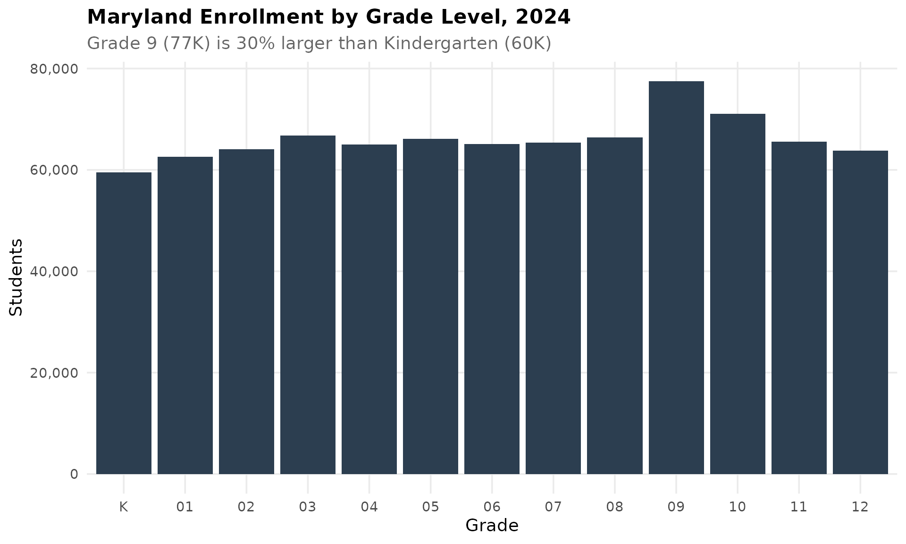
14. Montgomery County peaked in 2019 and has been declining
Maryland’s largest district reached 160,587 students in 2019, then lost nearly 6,000 students by 2024. This 3.6% decline in the state’s flagship district signals broader suburban enrollment pressure.
montgomery <- get_district_totals(enr) %>%
filter(district_name == "Montgomery") %>%
arrange(end_year)
stopifnot(nrow(montgomery) > 0)
montgomery %>%
select(end_year, n_students) %>%
mutate(change = n_students - lag(n_students),
pct_change = round((n_students / lag(n_students) - 1) * 100, 1))
#> end_year n_students change pct_change
#> 1...1 2016 154690 NA NA
#> 1...2 2017 157123 2433 1.6
#> 1...3 2018 158101 978 0.6
#> 1...4 2019 160587 2486 1.6
#> 1...5 2020 156967 -3620 -2.3
#> 1...6 2021 154592 -2375 -1.5
#> 1...7 2022 156246 1654 1.1
#> 1...8 2023 155788 -458 -0.3
#> 1...9 2024 154791 -997 -0.6
ggplot(montgomery, aes(x = end_year, y = n_students)) +
geom_line(linewidth = 1.5, color = colors["decline"]) +
geom_point(size = 3, color = colors["decline"]) +
scale_y_continuous(labels = comma, limits = c(0, NA)) +
labs(title = "Montgomery County: From Growth to Decline",
subtitle = "Lost nearly 6,000 students since 2019 peak",
x = "School Year", y = "Students") +
theme_readme()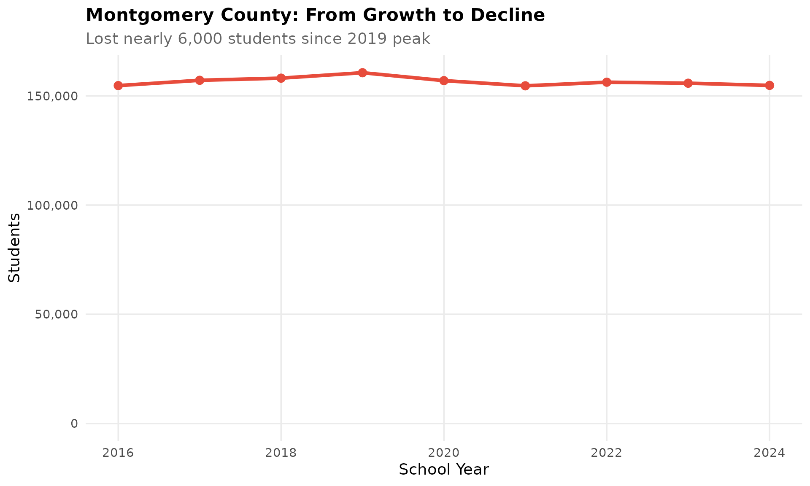
15. Small counties face existential challenges
Kent County has just 1,591 students, Somerset has 2,619, and Garrett has 3,193. These are among the smallest school districts in the mid-Atlantic region, making it difficult to offer diverse programs and maintain facilities.
small_counties <- c("Kent", "Somerset", "Garrett")
small_trend <- get_district_totals(enr) %>%
filter(district_name %in% small_counties) %>%
arrange(district_name, end_year)
stopifnot(nrow(small_trend) > 0)
small_trend %>%
filter(end_year == max(end_year)) %>%
select(district_name, n_students) %>%
arrange(n_students)
#> district_name n_students
#> 1...1 Kent 1591
#> 1...2 Somerset 2619
#> 1...3 Garrett 3193
ggplot(small_trend, aes(x = end_year, y = n_students, color = district_name)) +
geom_line(linewidth = 1.2) +
geom_point(size = 2.5) +
scale_y_continuous(labels = comma) +
labs(title = "Maryland's Smallest School Systems",
subtitle = "Kent, Somerset, and Garrett face enrollment pressure",
x = "School Year", y = "Students", color = "") +
theme_readme()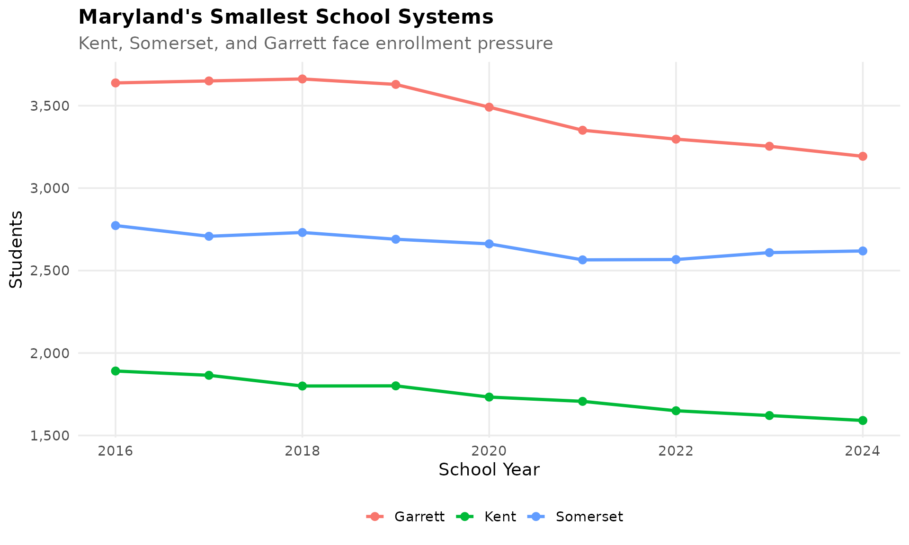
sessionInfo()
#> R version 4.5.2 (2025-10-31)
#> Platform: x86_64-pc-linux-gnu
#> Running under: Ubuntu 24.04.3 LTS
#>
#> Matrix products: default
#> BLAS: /usr/lib/x86_64-linux-gnu/openblas-pthread/libblas.so.3
#> LAPACK: /usr/lib/x86_64-linux-gnu/openblas-pthread/libopenblasp-r0.3.26.so; LAPACK version 3.12.0
#>
#> locale:
#> [1] LC_CTYPE=C.UTF-8 LC_NUMERIC=C LC_TIME=C.UTF-8
#> [4] LC_COLLATE=C.UTF-8 LC_MONETARY=C.UTF-8 LC_MESSAGES=C.UTF-8
#> [7] LC_PAPER=C.UTF-8 LC_NAME=C LC_ADDRESS=C
#> [10] LC_TELEPHONE=C LC_MEASUREMENT=C.UTF-8 LC_IDENTIFICATION=C
#>
#> time zone: UTC
#> tzcode source: system (glibc)
#>
#> attached base packages:
#> [1] stats graphics grDevices utils datasets methods base
#>
#> other attached packages:
#> [1] scales_1.4.0 dplyr_1.2.0 ggplot2_4.0.2 mdschooldata_0.3.0
#>
#> loaded via a namespace (and not attached):
#> [1] gtable_0.3.6 jsonlite_2.0.0 compiler_4.5.2 tidyselect_1.2.1
#> [5] jquerylib_0.1.4 systemfonts_1.3.1 textshaping_1.0.4 readxl_1.4.5
#> [9] yaml_2.3.12 fastmap_1.2.0 R6_2.6.1 labeling_0.4.3
#> [13] generics_0.1.4 curl_7.0.0 knitr_1.51 tibble_3.3.1
#> [17] desc_1.4.3 bslib_0.10.0 pillar_1.11.1 RColorBrewer_1.1-3
#> [21] rlang_1.1.7 utf8_1.2.6 cachem_1.1.0 xfun_0.56
#> [25] fs_1.6.6 sass_0.4.10 S7_0.2.1 cli_3.6.5
#> [29] pkgdown_2.2.0 withr_3.0.2 magrittr_2.0.4 digest_0.6.39
#> [33] grid_4.5.2 rappdirs_0.3.4 lifecycle_1.0.5 vctrs_0.7.1
#> [37] evaluate_1.0.5 glue_1.8.0 cellranger_1.1.0 farver_2.1.2
#> [41] codetools_0.2-20 ragg_1.5.0 httr_1.4.8 rmarkdown_2.30
#> [45] purrr_1.2.1 tools_4.5.2 pkgconfig_2.0.3 htmltools_0.5.9